Anders Rantzer
Lund University
Feedback, Interaction, Robustness and Events
A one-day workshop celebrating Rodolphe’s 60th birthday through the collaborations and scientific conversations that connect nonlinear control, geometry, collective dynamics and biological regulation.
Provisional list · invitations and attendance are not yet confirmed.
Lund University
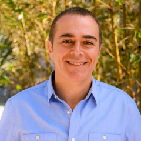
University of California, Santa Barbara
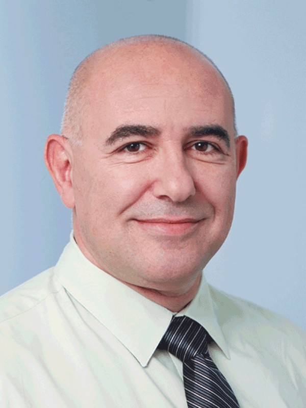
ETH Zurich
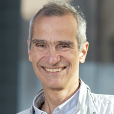
University of California, Irvine
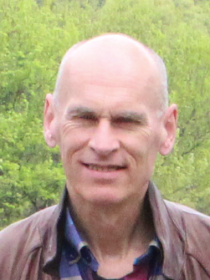
University of Groningen
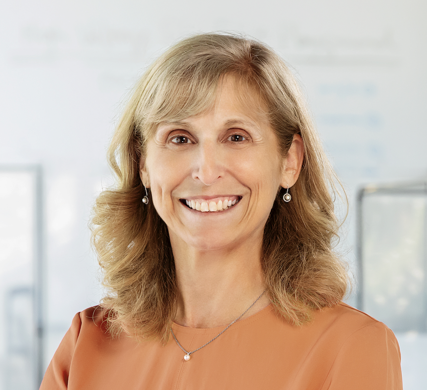
Princeton University
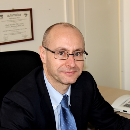
University of Bologna
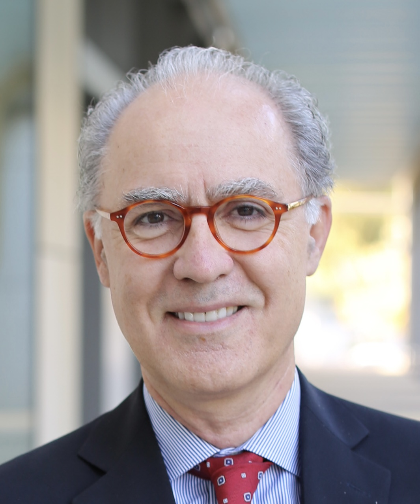
University of California San Diego
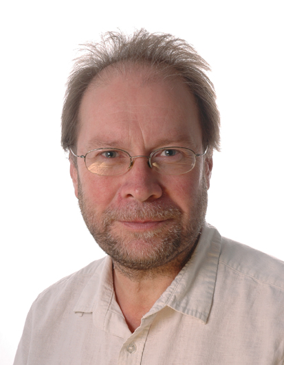
University of Cambridge
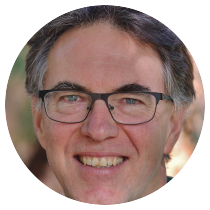
Australian National University
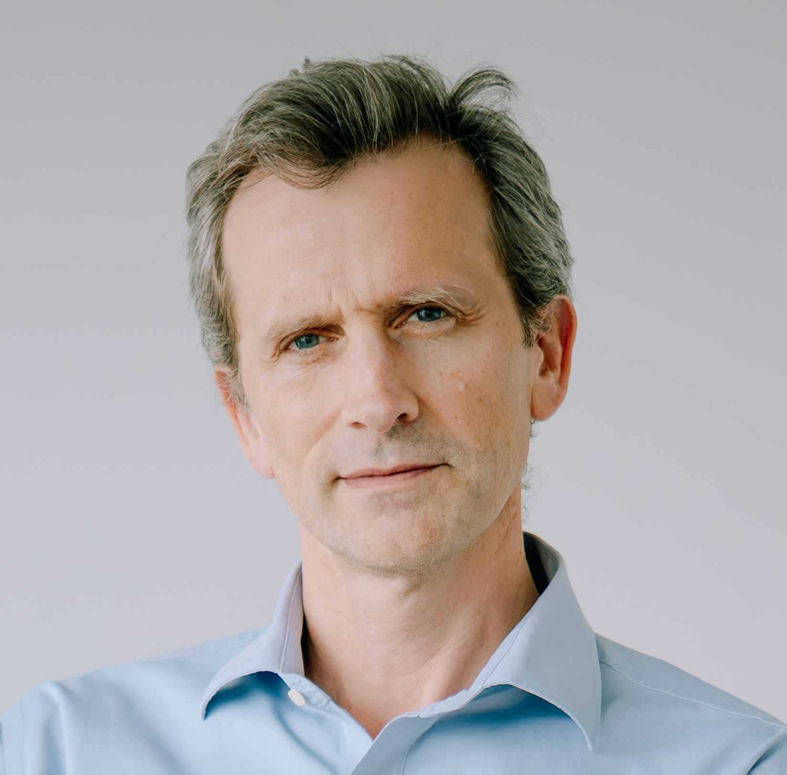
Inria / École normale supérieure – PSL
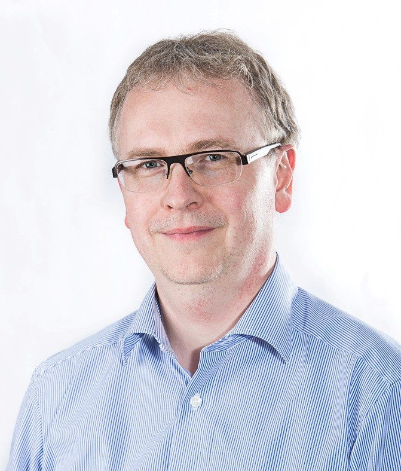
Schneider Electric
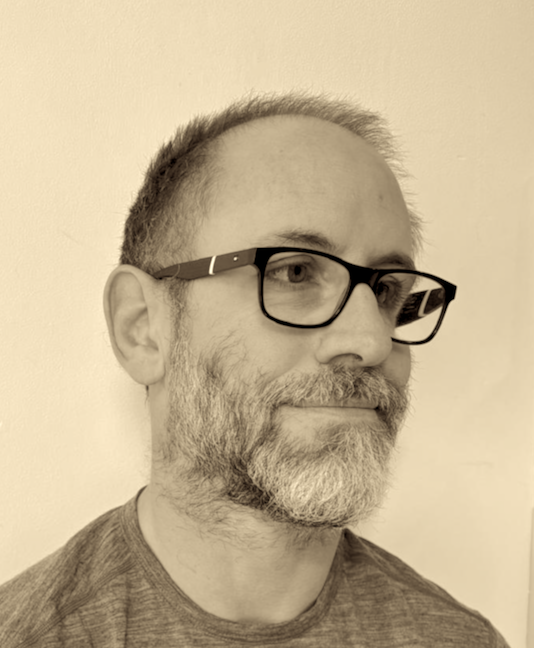
University of Cambridge

KU Leuven
Honoree

University of Cambridge
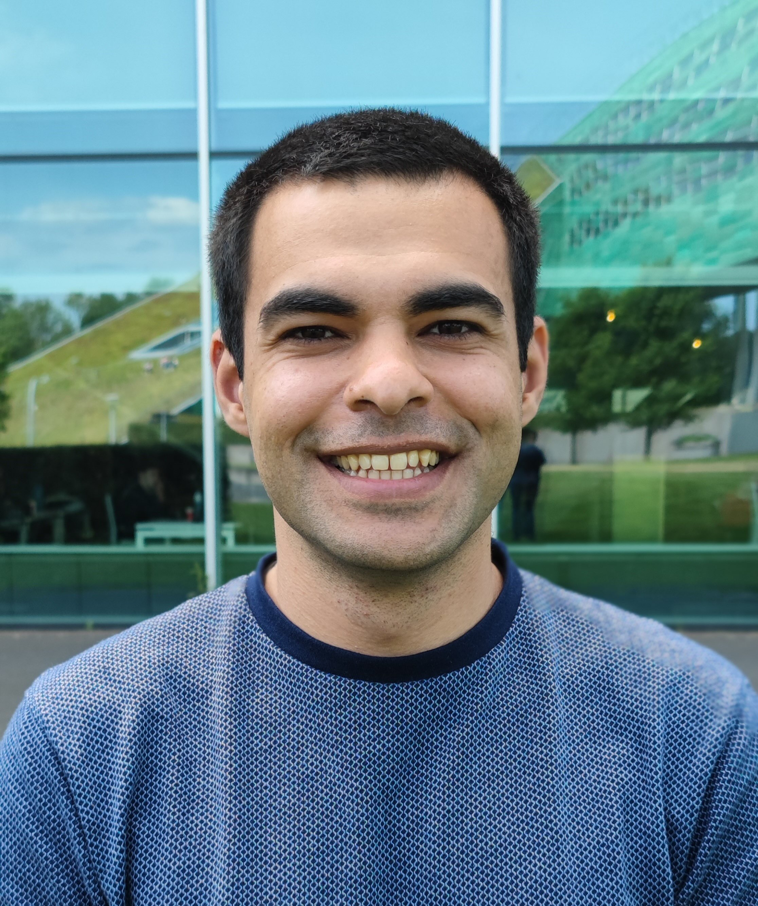
KU Leuven
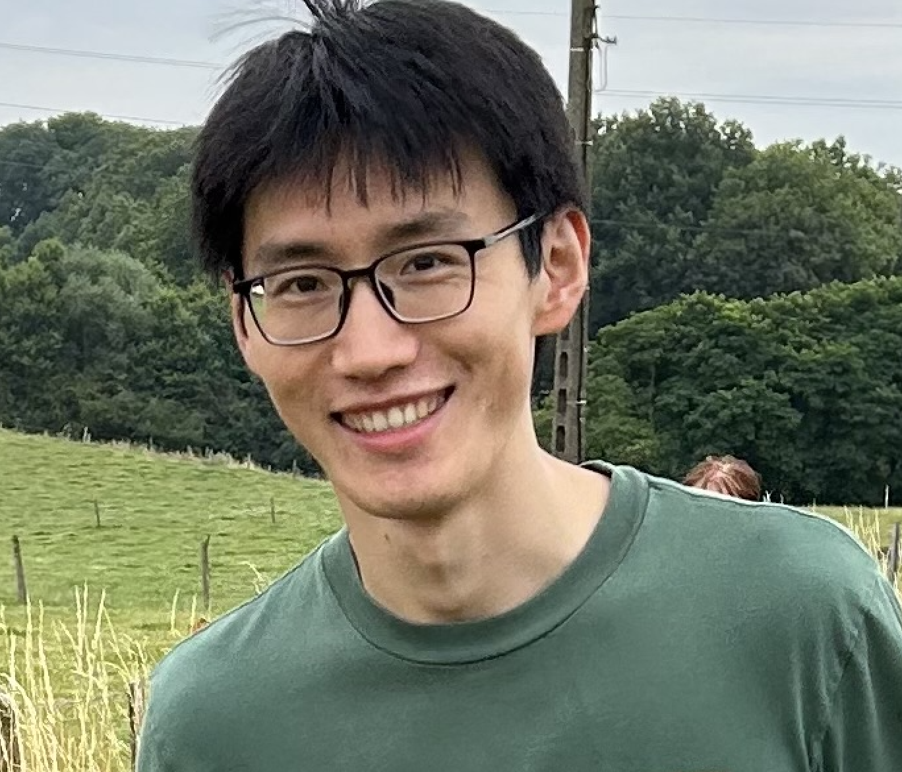
KU Leuven